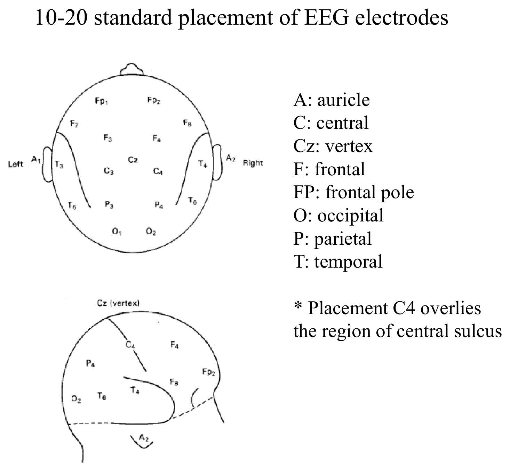
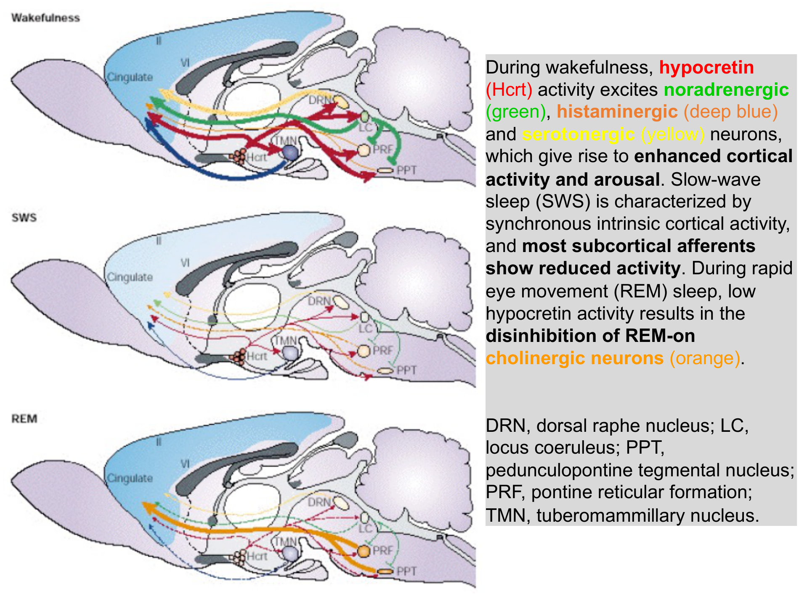
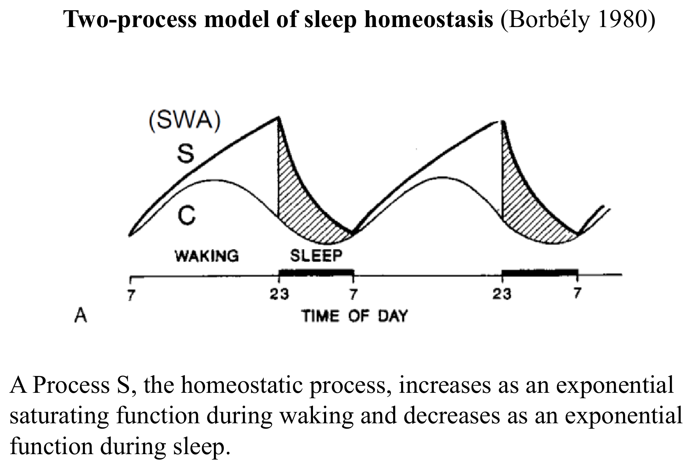

睡眠總論
睡眠是所有恆溫脊椎動物在演化上保留的基本中樞神經系統現象，儘管研究已相當深入，其確切生理功能至今仍未完全解明。
睡眠的定義
睡眠是一種可逆的行為狀態，特徵是知覺與環境的脫離、對外界刺激反應性降低；同時也是一種基本生理需求狀態，與飢餓、口渴等維持個體生存所必需的生理需求性質相似——長時間（超過24小時）刻意避免睡眠極為困難，強迫剝奪睡眠甚至可使實驗大鼠死亡，顯示睡眠驅力之強烈不亞於進食與飲水。
睡眠的演化保留性與研究意義
成年人類約三分之一的生命時間在睡眠中度過，新生兒的睡眠時間比例更高達約三分之二；睡眠現象在所有恆溫脊椎動物中皆被保留，顯示其必然具備重要的演化適應價值。REM睡眠（又稱夢境睡眠或矛盾睡眠paradoxical sleep）尤其特殊——大腦此時展現高度活躍的活動模式，與睡眠給人的「靜止休息」印象矛盾，是睡眠研究最引人關注的現象之一。
睡眠的兩大狀態分類
睡眠是由神經與生化機轉交互作用調控的中樞現象，可分兩個各自獨立的狀態：非快速動眼期睡眠（NREM）與快速動眼期睡眠（REM），兩者的腦波型態、神經傳導物質活性、生理特徵皆截然不同（見「睡眠分期」與「神經調控」章節）。
EEG腦波紀錄與波型分類
腦電圖（Electroencephalogram, EEG）記錄大腦皮質神經元群體同步電活動，是研究睡眠與意識狀態最基本的工具，此節與「意識、腦與行為」章節EEG基礎概念互相呼應，本節做更完整的波型與電極配置整理。
電極配置：活動電極與參考電極
活動電極（active electrode）置於欲偵測神經活動的部位，參考電極（indifferent electrode）則置於距離活動部位較遠處；EEG訊號同時可從時間（頻率）域與空間域兩個角度分析。EEG活動的一般頻率範圍為1–30 Hz，振幅約20–100 µV。

四種EEG波型（依頻率由快至慢）
| 波型 | 頻率範圍 | 特徵情境 |
|---|---|---|
| β波 Beta | 13–30 Hz | 振幅最小，見於強烈心智活動時，主要分布額葉區域 |
| α波 Alpha（Berger rhythm） | 8–13 Hz | 放鬆但清醒狀態，主要分布頂葉與枕葉區域 |
| θ波 Theta | 4–7 Hz | 淺睡（第2期睡眠） |
| δ波 Delta | 0.5–4 Hz | 深睡（慢波睡眠），振幅最大 |
同步化 vs 去同步化EEG
同步化（synchronized）EEG：大量神經元群體活動時間趨於一致，產生低頻、高振幅的波形（如δ波），特徵是慢波睡眠；去同步化（desynchronized）EEG：神經元各自獨立、非同步放電，產生高頻、低振幅的波形（如β波），特徵是清醒警覺狀態與REM睡眠——值得注意的是，REM睡眠的EEG型態類似清醒狀態（去同步化），這正是REM睡眠又被稱為「矛盾睡眠」的腦波學基礎：身體處於睡眠肌肉癱瘓狀態，腦波卻呈現類清醒的活躍型態。
腦波同步化機轉
大規模、高振幅EEG訊號的產生，依賴大量神經元的同步活動，此同步化可經兩種基本的神經迴路機轉達成。
兩種同步節律產生機轉
兩群功能相反（如興奮性與抑制性）的神經元透過交互抑制或交互興奮的迴路連結，產生節律性的交替活動模式
單一神經元本身因離子通道特性（如具內在節律點特性的膜電位振盪）即可產生週期性放電，不需依賴迴路交互作用
視丘-皮質節律的傳遞
視丘（thalamus）內部的節律活動可驅動大腦皮質的相應節律，是α波、δ波等特徵性睡眠腦波得以在廣泛皮質區域同步出現的重要解剖基礎；此視丘-皮質迴路的異常同步化活動，也是局部性與全身性癲癇發作時頭皮記錄可見特徵性異常放電的病理生理基礎，是EEG在臨床神經學診斷中的重要應用。
NREM與REM睡眠分期
人類睡眠依腦波特徵與生理表現可分五期，一個完整睡眠週期約90分鐘，整夜由多個週期組成，各期占比隨年齡與物種而異。
| 分期 | 特徵 | 占整夜睡眠比例／持續時間 |
|---|---|---|
| 第1期 Stage 1 | 入睡過渡期，清醒與睡眠間的轉換階段 | 約2–5%，持續1–5分鐘；不寧腿症候群或睡眠呼吸中止症等易頻繁喚醒的疾患會使此期比例大幅增加 |
| 第2期 Stage 2 | 睡眠的「基準」階段，屬90分鐘週期的一部分 | 約45–60% |
| 第3/4期（δ睡眠／慢波睡眠） | 腦波由第2期的θ節律大幅減慢至1–2 Hz的δ節律，振幅大幅增加；多數成年人於入睡後最初兩個90分鐘週期（約前3小時）內完成此階段 | 兒童可達整夜睡眠的40% |
| REM睡眠 | 高度活躍的睡眠階段，呼吸、心率、腦波活動皆加快，可能出現生動夢境，因眼球快速移動而得名；結束後身體通常回到第2期睡眠 | 約20–25% |
一般常誤以為REM睡眠是最深層的睡眠階段，但實際上δ睡眠（慢波睡眠）才是生理學定義上最深層、最具恢復性（restorative）的睡眠階段——睡眠剝奪後的動物／人，其大腦會優先渴求並補償δ睡眠的流失；兒童δ睡眠占比高，是兒童睡眠中特別「叫不醒、睡得沉」現象的生理基礎，這是常見的考試易混淆點。
覺醒系統神經傳導物質
維持清醒狀態依賴腦幹上行網狀系統與多種神經傳導物質系統的協同作用，理解各系統的解剖位置與活性型態，是理解多種鎮靜/興奮藥物作用機轉的生理基礎。
網狀結構 Reticular Formation（麩胺酸能神經元）
位於延腦尾側延伸至中腦核心，維持清醒狀態特別依賴其頭側（rostral）半部——中腦以上病灶常導致昏迷或嗜睡；接受體感覺與內臟感覺輸入，並發出興奮性輸出至視丘（板內核與中線核）、下視丘、基底前腦。經視丘的投射對於視丘皮質活化是必要的，產生清醒狀態特徵性的低振幅、高頻率EEG；經下視丘的腹側路徑則可能是表現清醒狀態行為所必需。
各神經傳導物質系統總表
| 傳導物質 | 主要核團位置 | 清醒 | NREM | REM | 備註 |
|---|---|---|---|---|---|
| 乙醯膽鹼 ACh | PPT/LDT（橋腦被蓋）、基底前腦 | 高 | 低 | 高 | 促進視丘皮質活化、快速皮質節律；阿茲海默症患者高頻EEG活動減少 |
| 正腎上腺素 NE | 藍斑核 Locus Coeruleus | 非常活躍 | 較不活躍 | 幾乎靜止 | 促進皮質活化與清醒，尤其壓力狀態下 |
| 組織胺 Histamine | 結節乳頭核 TMN（下視丘後部，腦內唯一組織胺神經元來源） | 高 | 低 | 極低 | H1拮抗劑（如diphenhydramine）促進NREM/REM睡眠，即抗組織胺藥物的嗜睡副作用機轉 |
| 血清素 Serotonin | 中縫核（正中與背側） | 活躍 | 較不活躍 | 不活躍 | 5-HT訊號不足與部分憂鬱症患者的嗜睡症狀有關 |
| 多巴胺 Dopamine | 黑質、腹側被蓋區、下視丘後部 | 濃度上升 | 放電頻率無明顯週期變化 | 典型抗精神病藥（D1/D2阻斷劑）促進睡眠；巴金森氏症患者常嗜睡 | |
| 食慾素/下視丘泌素 Orexin/Hypocretin | 外側與後側下視丘 | 最活躍（尤其激動或運動時） | 較不活躍 | 不明確 | 食慾素訊號缺失導致猝睡症（narcolepsy）合併猝倒，是維持清醒狀態的關鍵系統 |
食慾素（orexin/hypocretin）系統缺陷是猝睡症合併猝倒（narcolepsy with cataplexy）的核心病理機轉——食慾素神經元喪失使覺醒系統失去關鍵穩定訊號，導致清醒與睡眠狀態邊界不穩定，可能突然由清醒直接進入類REM狀態（猝倒，肌肉張力驟失）。此為人類與犬皆有記載的疾病，犬猝睡症是重要的獸醫神經學／睡眠醫學研究模式動物。
NREM睡眠調控系統
睡眠過去曾被認為只是「上行覺醒系統活性降低」的被動現象，但現已明確存在主動促進睡眠的特定腦區系統。
腹外側視前區 VLPO 及其他促眠區域
腹外側視前區（Ventrolateral Preoptic Area, VLPO）、視前區、基底前腦內特定神經元（分泌GABA與galanin，皆為抑制性傳導物質）於NREM睡眠期間活性增加；這些抑制性投射會抑制前述覺醒系統的多個核團（TMN、外側下視丘、藍斑核LC、中縫核DR、PPT/LDT），是NREM睡眠得以「主動關閉」覺醒系統、而非單純被動休止的關鍵機轉。
苯二氮平類（benzodiazepines）與巴比妥類（barbiturates）藥物透過增強GABA訊號傳遞來促進睡眠，其作用位點正是這套以GABA為核心傳導物質的NREM促眠系統，是鎮靜安眠藥物設計的核心藥理學基礎。
REM睡眠調控系統
REM睡眠主要由膽鹼性與胺基類（aminergic）腦幹神經元間的交互作用調控，此系統同時解釋了REM睡眠特有的骨骼肌張力喪失（atonia）現象。
REM-on膽鹼性神經元的去抑制
PPT/LDT區域附近存在一群REM睡眠期間特別活躍的細胞，此區病灶可完全消除REM睡眠；清醒與NREM睡眠期間，這些「REM-on」膽鹼性神經元受NE、5-HT、組織胺（皆為前述覺醒系統的胺基類傳導物質）抑制；當這些胺基類神經元於REM睡眠期間陷入沉寂（見前節表格：REM期NE/5-HT/histamine活性皆降至最低），REM-on膽鹼性神經元便獲得去抑制（disinhibition），大量放電、經投射至視丘產生類似清醒的去同步化EEG。

REM睡眠肌肉張力喪失（Atonia）的機轉
上行路徑則另經甘胺酸投射至藍斑核與紅核，被認為在REM睡眠的整體調控中扮演輔助角色。此atonia機轉的失效即為REM睡眠行為障礙（REM sleep behavior disorder）的病理基礎——患者（人類與犬皆有描述）在REM睡眠中因atonia機轉失效而出現肢體動作，可能將夢境內容實際表演出來，是重要的睡眠障礙鑑別診斷。
兩歷程模型
睡眠與清醒受多個腦區動態交互作用調控，Borbély於1980年提出的「兩歷程模型（two-process model）」提供了一個實用的巨觀整合框架，是理解睡眠時機調控的核心理論。

Process S：恆定歷程 Homeostatic Process
清醒期間以飽和指數函數方式累積上升（清醒越久，睡眠壓力/驅力越大，但增幅逐漸趨緩）；睡眠期間以指數函數方式下降（入睡後睡眠壓力快速消退，隨後趨緩）。此歷程被認為與大腦局部代謝物（如腺苷adenosine）的累積與清除有關，反映的是「清醒時間長短」本身對睡眠需求的直接影響。
Process C：晝夜歷程 Circadian Process
由下視丘視交叉上核（SCN，單一光敏感節律點）驅動，與核心體溫的晝夜節律密切相關——睡眠傾向於核心體溫較低的時段（如深夜至清晨）增加，與「體液電解質與體溫調節」章節直腸溫度晝夜節律曲線直接對應。
睡眠剝奪對兩歷程的不對稱影響
睡眠剝奪對恆定歷程（Process S）的調控影響重大（睡眠壓力大幅累積、補償性δ睡眠增加），但對晝夜節律振盪器（Process C）幾乎沒有影響或影響輕微——這說明「想睡」的驅力主要來自清醒時間累積的恆定壓力，而「幾點容易睡著／清醒」的時機偏好則相對頑固地由獨立的生理時鐘決定，兩者是可分離的獨立調控系統，此概念常用於解釋輪班工作者或時差調整的睡眠困擾成因。
生理時鐘與退黑激素
晝夜節律（circadian rhythm）是所有真核生物（甚至部分原核生物如藍菌）共有的基本生理現象，即使脫離環境時間線索仍能持續運作，是內源性、自主振盪的生理時鐘系統。
晝夜節律的自主性
即使將動物置於持續黑暗等恆定環境中，晝夜節律仍會持續存在，但週期會略長或略短於24小時——這正是「circadian（約為一天）」一詞的由來，說明晝夜節律本質上是內生的自由運行振盪器，環境光照週期的角色是「校準（entrainment）」而非「產生」此節律。
視交叉上核 SCN：哺乳動物的主節律點
下視丘的視交叉上核（Suprachiasmatic Nucleus, SCN）是哺乳動物最主要的晝夜節律起搏點，其輸出訊號耦合至下視丘其他區域等多個腦區效應器；SCN投射至VLPO（NREM促眠中樞）、外側下視丘（含食慾素神經元）、藍斑核LC，是連結晝夜節律訊號與實際睡醒週期表現最重要的傳出路徑。
退黑激素 Melatonin
由松果腺合成分泌，受黑暗刺激、受光照抑制；即使沒有視覺線索，血中退黑激素濃度仍依晝夜週期規律起伏，高峰通常出現於凌晨時段。臨床應用：促進入睡（可用於部分失眠情況）、加速時差調整恢復、副作用相對輕微安全性高，是獸醫臨床上也常用於犬貓行為/睡眠問題輔助治療的內源性激素補充品。
分子時鐘基因
晝夜節律的細胞分子基礎涉及一組時鐘基因（clock genes）的轉錄-轉譯回饋迴路，主要包括Period基因（Per1、Per2、Per3）與Cryptochrome基因（Cry1、Cry2），這些基因產物的濃度以約24小時為週期規律振盪，構成細胞層級的分子節律振盪器，是SCN神經元乃至全身周邊組織細胞維持晝夜節律的共同分子機轉。
睡眠剝奪的影響
近年研究逐漸揭示睡眠對認知功能與腦部代謝廢物清除具有具體且可測量的生理意義，是睡眠功能研究從假說走向實證的重要進展。
睡眠剝奪對記憶編碼的影響
研究顯示36小時完全睡眠剝奪會顯著影響人類陳述性記憶（declarative memory）的編碼能力，此效應在情緒性記憶（正向與負向）與非情緒性（中性）記憶類別間程度有所不同；動物實驗顯示6小時完全睡眠剝奪會使大鼠海馬迴中磷酸化細胞外訊號調節激酶2（pERK2，與突觸可塑性/記憶鞏固相關的訊息傳遞分子）濃度顯著下降，而恢復睡眠2小時後即可回升至高於對照組的水平，顯示睡眠（尤其恢復性睡眠）對記憶相關分子機轉具有直接且快速可逆的調節作用。
類淋巴系統與腦內代謝廢物清除
類淋巴系統（glymphatic system）是近年發現的腦內廢物清除路徑，經腦脊髓液沿血管周圍間隙流動、清除腦組織間隙代謝廢物；研究顯示類澱粉蛋白β（amyloid-β，阿茲海默症相關的病理性堆積蛋白）主要於睡眠期間被有效清除，睡眠不足可能因此與此類蛋白病理性堆積、神經退化性疾病風險上升有關，是近年睡眠醫學與神經退化疾病研究交會的重要前沿議題。
類淋巴系統與類澱粉蛋白清除的發現，為「睡眠具有腦部代謝廢物清除功能」這個長期被推測但缺乏直接證據的假說，提供了具體的解剖與分子機轉支持，是理解「為何長期睡眠不足與認知功能退化風險相關」的重要生理基礎。
睡眠功能假說
儘管睡眠的確切生理功能仍未完全解明，學界提出多種互不排斥的假說，理解這些假說有助於全面掌握睡眠研究的理論框架。
睡眠具有物種適應優勢：保護夜視能力差的動物免於夜間活動風險；使需調節體溫的動物得以在溫暖處休息、節省對抗低溫的代謝消耗；促成配偶與後代群聚於巢穴，利於繁殖與育幼
長時間運動或清醒後NREM睡眠增加，慢波睡眠可能具有節省能量的作用；胺基類神經元於REM睡眠期間停止活動，可能利於補充神經傳導物質庫存；但此假說面臨挑戰——NREM期間真正「休止」的神經元比例其實很低，REM期間大腦活動反而非常旺盛，「睡眠即神經休息」這個最直覺的解釋證據並不充分
發育中動物花費大量時間於REM睡眠，可能與神經迴路的組織化發展有關——在迴路實際應用於真實世界前先行「演練」；或週期性以半隨機方式刺激皮質，維持那些平時罕少被外界刺激活化、但攸關生存的關鍵迴路（如緊急防禦反應迴路）不致退化
睡眠對學習與記憶鞏固具有重要作用，包括遺忘潛在干擾性記憶（如原本不該被隨機活化喚起的記憶）、比對新記憶與既有記憶或基因既定的行為模式；因與高階認知功能直接相關，此假說是目前研究最廣泛深入的方向，與「睡眠剝奪的影響」章節記憶編碼實證研究直接呼應
物種比較：海豚的單側大腦睡眠
瓶鼻海豚（bottlenose dolphin）等部分海洋哺乳類演化出單側大腦睡眠（unihemispheric sleep）的特殊機制——兩側大腦半球輪流進入慢波睡眠狀態，另一側則維持清醒，使動物得以在持續睡眠需求下，仍能維持基本的游泳能力、主動浮出水面呼吸與環境警覺，是動物對特殊生存環境演化出獨特睡眠適應策略的經典範例。
學習重點整理
本章的核心是理解「覺醒（多種胺基類系統）↔NREM（GABA/VLPO）↔REM（膽鹼系統去抑制）」三態之間的神經傳導物質翹翹板式調控，以及「恆定歷程＋晝夜歷程」共同決定何時入睡。考題常考「各神經傳導物質在三態的活性變化」「δ睡眠才是最深睡眠」「兩歷程模型的睡眠剝奪不對稱效應」。
練習題
涵蓋EEG波型、睡眠分期、神經傳導物質調控、兩歷程模型、晝夜節律等章節重點，題型參照國考與轉學考命題方向，先自己作答再點「顯示答案」核對。
儘管一般直覺常誤以為REM睡眠是最深層睡眠，但生理學上δ睡眠（慢波睡眠）才是最深層、最具恢復性的階段，睡眠剝奪後身體會優先渴求補償δ睡眠的流失；兒童δ睡眠占比可高達整夜睡眠的40%，是兒童特別「睡得沉、不易喚醒」的生理基礎，第2期睡眠才是占比最高的基準階段（約45–60%）。
清醒與NREM睡眠期間，REM-on膽鹼性神經元（位於PPT/LDT附近）受NE、5-HT、組織胺等胺基類傳導物質抑制；REM睡眠期間這些胺基類神經元活性降至最低甚至沉寂，使REM-on膽鹼性神經元獲得去抑制、大量放電，產生REM睡眠特有的去同步化皮質活化，這是理解REM睡眠啟動機轉的核心邏輯。
NREM睡眠由VLPO等區域分泌GABA與galanin主動抑制覺醒系統多個核團而產生，苯二氮平類與巴比妥類藥物正是透過增強GABA受體訊號傳遞來促進睡眠，其藥理作用位點與這套內源性NREM促眠系統的核心傳導物質一致。
食慾素/下視丘泌素系統是維持清醒穩定性的關鍵系統，中樞注射食慾素可增加清醒、抑制NREM與REM睡眠；食慾素訊號缺失會導致猝睡症合併猝倒，使動物可能從清醒狀態突然直接進入類REM狀態（肌肉張力驟失），此疾病在人類與犬皆有相關病例記載，是重要的比較神經生理學／睡眠醫學研究模式。
Process S是恆定歷程，在清醒期間以飽和指數函數方式累積上升（代表睡眠壓力隨清醒時間增加而累積，但增幅隨時間趨緩），並在睡眠期間以指數函數方式快速下降；此歷程被認為與大腦局部代謝物質（如腺苷）的累積清除有關，直接反映清醒時間長短對睡眠需求的影響。Process C是晝夜歷程，由下視丘視交叉上核（SCN）這個內生自主振盪的生理時鐘驅動，與核心體溫的晝夜節律密切相關，決定的是「傾向在一天中哪個時段睡覺」的時機偏好，並非睡眠壓力本身。研究顯示睡眠剝奪對Process S的影響重大（睡眠壓力大幅累積、補償性慢波睡眠增加），但對Process C（晝夜節律振盪器本身）幾乎沒有影響或影響輕微，這說明兩者是各自獨立、可分離的調控系統：睡眠剝奪會讓動物「更想睡」（Process S累積），但不會立即改變動物「原本習慣在什麼時段睡覺」的生理時鐘設定（Process C相對頑固），這也是輪班工作者或時差調整常見睡眠困擾的機轉基礎——即使極度睏倦（Process S極高），身體的晝夜節律時鐘仍可能傾向在「不對」的時段維持清醒。
退黑激素由松果腺合成分泌，其分泌受黑暗刺激、受光照抑制；即使在缺乏視覺線索的情況下，血中退黑激素濃度仍會依晝夜週期規律起伏，高峰通常出現於凌晨時段，臨床上可用於促進入睡或加速時差調整恢復，是晝夜節律訊號（源自SCN）調控下游內分泌輸出的具體範例。